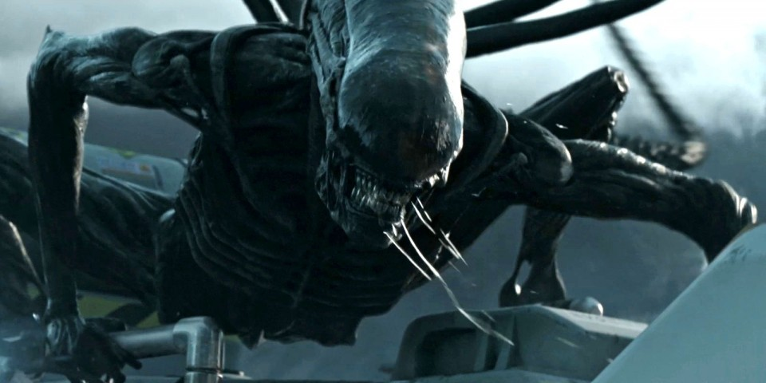

Saga Alien
La saga de Alien es una saga cinematográfica de ciencia ficción y terror que relata la historia de la teniente Ellen Ripley (protagonizada por Sigourney Weaver) y su lucha contra una forma de vida alienígena, conocida simplemente como el alien o xenomorfo. La serie comenzó en 1979 con la película de 20th Century Fox Alien, el octavo pasajero y a partir de esta se produjeron tres secuelas y dos precuelas, al igual que numerosos cómics, libros y videojuegos basados en la franquicia.
Relacionadas con la serie están las películas de Alien vs. Predator (Alien vs. Predator y Alien vs. Predator: Requiem), que se basan en la franquicia que hace la combinación del universo de Alien con el de la saga cinematográfica de Depredador.
¿Cómo empieza todo?
La nave espacial Nostromo visita un planetoide desolado después de recibir una señal desconocida de una nave extraterrestre abandonada y en ruinas. Mientras la tripulación del Nostromo explora la nave, uno de ellos encuentra lo que parece ser un nido de huevos, uno de ellos se abre y sale una criatura que se adhiere a su rostro y lo deja inconsciente. Un tiempo después, el parásito muere y el miembro de la tripulación despierta, aparentemente en buen estado de salud. Más tarde, sin embargo, una criatura extraterrestre sale violentamente de su pecho, matándolo, y luego de crecer rápidamente hasta 2,5 metros, comienza a matar a otros miembros de la tripulación.

Alien adulto sonriendo a las cámaras.
Luego de terminar la película Dark Star (1974), Dan O'Bannon pensó en expandir sobre algunas de sus ideas (en especial el concepto de un «extraterrestre cazando a la tripulación de una nave espacial dentro de ella») y crear una película de ciencia ficción y terror. El proyecto fue llamado provisionalmente Memory (lit. ‘memoria’). El guionista Ronald Shusett colaboró con O'Bannon en el proyecto, añadiendo elementos de un guion anterior de O'Bannon llamado Gremlins, en el cual los gremlins causaban desastres a bordo de un bombardero de la Segunda Guerra Mundial y aterrorizaban a su tripulación. El dúo concluyó el guion, inicialmente llamado Star Beast (lit. ‘bestia estelar’), y O'Bannon se percató de la gran cantidad de veces que la palabra Alien se repetía, por lo que nombró a la película Alien. Los escritores pensaban inicialmente en hacer una película de bajo presupuesto, pero el éxito de Star Wars llevó a Fox a invertir millones en la producción.
En el guion original la nave tiene una tripulación compuesta exclusivamente por hombres (aunque en la sección de reparto del guion se indicaba que todos los personajes eran unisex y que todas las partes eran «intercambiables entre hombres o mujeres»), incluyendo al personaje de Ripley, quién hubiese sido protagonizado por Tom Skerritt. Más adelante, cuando los productores Alan Ladd Jr., Walter Hill y David Giler, escucharon rumores de que Fox estaba trabajando en otros proyectos con protagonistas femeninas fuertes, Sigourney Weaver fue seleccionada para protagonizar el papel de Ellen Ripley y Skerrit se convirtió en el capitán Dallas.
El pintor y escultor suizo H.R. Giger diseñó al xenomorfo adulto y al facehugger, mientras que Moebius creó los aspectos visuales de los trajes espaciales y Ron Cobb proveyó casi todo el diseño en el set.
Si esta introducción no fue suficiente, te dejamos el trailer para que lo replantees:
Lista de películas
| Alien, el octavo pasajero | 1979 |
| Aliens, el regreso | 1986 |
| Alien 3 | 1992 |
| Alien Resurrection | 1997 |
| Prometheus | 2012 |
| Alien: Covenant | 2017 |
Orden cronológico de los acontecimientos
Ante esa tesitura, surge una duda existencial. Porque el serial de terror en el espacio ha dado tantos bandazos que uno nunca tiene claro qué películas ver, qué variantes xenomorfas es mejor dejar fuera o si la presencia de los Depredadores es canon o no. Tras consultar con los archivos de la corporación Weyland-Yutani, nosotros hemos elaborado esta práctica guía para aclararte las ideas. Que, si no, se te ponen las carnes tensas, y los pobres animalitos se indigestan.
- Prometheus
- Alien: Covenant
- Alien, el octavo pasajero
- Aliens: El regreso
- Alien 3
- Alien: Resurrección
Otros proyectos
Si todavía no estás satisfecho con la cantidad de películas y demases que hay a nuestra disposición para ver, todavía hay más. A continuación una lista de otros proyectos relacionados con la franquicia:
- Cómics
- Novelas
- Películas
- Alien vs Depredador (2004)
- Aliens vs Depredador: Requiem (2007)
- Videojuegos